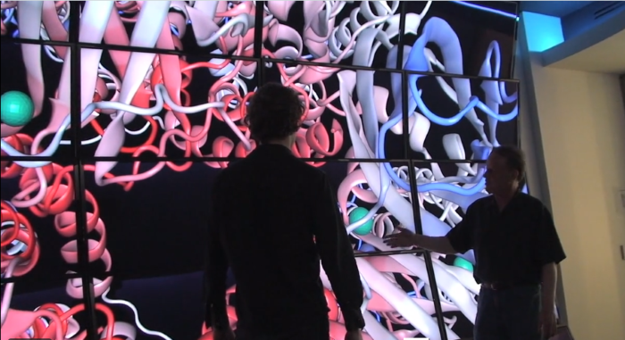

Summary
Hi! My name is LuoLei Zhao, but you can call me Larry.
I graduated with a Masters in Computer Science from Northwestern University and I currently work on Flight Simulators at Boeing, but I am interested in much more than just that.
I consider myself an "All-Rounder" to the core, and designed my logo to represent my love of combining Art , Design, Technology and Teamwork. I am also always working on something to improve myself. Why not stick around and see what I've made these days!
Why not stick around and see what I've made these days!
Projects
Little Deity
You are a "spirit", you are built from the thoughts and emotions of human beings, as is everything in your spirit world. But when a hidden force starts manipulating people in the real world, chaos erupts in your world as well.
Little Deity is my current Unity project, meant to be a place for me to constatly improve my 2D animation, as well as C-sharp programming skills. The game is a no-holding-back, fast paced action game that emphasizes ease-of-entry without compromising depth. Using innovative controls and "smart" automatic systems, it is intended to make anyone able to do something that would be hard in any other game. I use this project as an opportunity to explore new skills, including developing shaders for artistic flair, creating a custom programming language to speed up cutscene creation, serializing save files and much more!
"You are an A.I, newly created in a top-secret lab. You have the ability to steal and transfer the properties of others. Unsure of the extent of your abilities, or your role in the world, you steal the body and memories of your creator. From there, you plan your escape..."
Quintessence is a project built in Unity. It explores the possibilities of Unity's unique component based architecture by dynamically adding and removing components to create new prefabs on the spot. Components make extensive use of messages and factory classes to interact with each other seamlessly.
Sol is a AI Knowledge Representation research project created in collaboration with Professor Ian Horswill at Northwestern University. It is an action 2D side-scrolling game with increased emphasis on NPC interactions and relationships. In this game, every little action an NPC "sees" will be stored, remembered, and used in future decisions. Underneath the hood is a system that makes use of elements from logical programming languages to store and match "predicates" of information, and a simple machine learning using activation functions to make decisions
In Lua, Player 1 uses the keyboard to control Lua, a platforming character in a dangerous and chaotic world ruled by Player 2, who uses the mouse to place, drop, and spawn entities to try to stop her from reaching the end of each level. This project, like many of my indie projects, was done on a small team with Agile methodology. Here, I learned how to make the best use of Regular playtesting to set goals. The project uses a custom physics engine making use of raycasting for hit detection.
Arcade-like physics-focused space shooter. Focuses on defending the planet from an alien invasion, while making use of Newton's Second law to propel yourself through space!
Boxel is a 2D side-scrolling action game written in Lua. Objects in Boxel each have special modules, which can be acquired or swapped using the modular replicator. Players can employ clever tactics by combining various modules or even altering the modules of their enemies in order to defeat them. Will you survive?
Work Experience
Boeing - Flight Simulator Systems

See that picture of a state-of-the-art Boeing Flight Simulator?
Before it reaches our team, it is little more than a tall stack of software disks, a massive set of computer racks, and a big bin of wires.
It is our team's job to make sure these components can work happily together. From hardware components, to shaders, to virtual disk systems,to graphics drivers, to projectors, to light sensors, to servos, I apply my skills across a huge variety of applications. Some of the integration we do ourselves, with our own C++ programs managing some hardware, and Python and Powershell scripts to speed up some processes. But more importantly, we maintain consistent communication with the experts before us, and create comprehensive documentation for the users after us.
Soar Technologies - Software Internship
At SoarTech, I Designed and Developed Data Visualization apps for the FLUENT Intelligent Training Project. A Cybersecurity training group wanted to analyze not only how well students did, but also exactly what they were interacting with throughout the training process. Through my Python application, we parsed log files into meaningful classes. From there, I was able to create a javascript interface to an interactive timeline of all student activities, along with plentiful filters to help the group analyze what promoted engagement
In addition, I explored innovative means of determining analyzing student behavior for adaptive training simulations. I worked on extension's to Soar's C++ based Next Generation Threat System that improved the ability for the program to categorize what the student is currently doing
Northwestern Research Computing - Visualization Developer

If scientists could always see with their subjects with their own two eyes, research would be so much easier!
Fortunately, my team at Visualization team made it possible for Scientists to analyze subjects from individual molecules to entire galaxy clusters!
At Northwestern Reserach computing, I worked on "Firefly" a C++ application that helped astrophysicists analyze huge data sets (We aren't just talking Big Data, we're talking GALACTIC DATA). Using selective filtering and heavy use of OpenGL parallelization, we were able to create a Visualization app that allowed for free 3D cameras, dynamic filters, and custom color-schemes, all while running on your laptop
Pictured here is a room-sized 3D wall display at the Center of Molecular Imaging at Northwestern University. I created a Javascript Interface that made it possible for a Professor to walk in, connect to our server and instantly be able to present for whatever talk, presentation, or even class they needed. I continued working on extensions, creating custom apps for Photoshoots, molecular rendering, Ultra-Resolution movies, and even a port of Asteroids!
Activities
I teach Programming through Video Game Development to middle school and high school aged students.
For many students, programming is taught in a way that makes it seem too abstract or difficult. I aim to use my class as a way to inspire students by introducing programming through a medium that many kids are familiar with and love: Video Games. I hope to that by tying real technical concepts to familiar video game mechanics, students may be inspired to pursue this rewarding career choice.
Established Pioneers of Interactive Entertainment (PIE), Northwestern University's chapter of the International Game Developers Association.
Our club promotes interactive entertainment as a field of study and career option for Northwestern students through networking opportunities and hands-on experiences. We have successfully hosted the Global Game Jam, invited industry CEOs as speakers, and host the "Trailblazer" program, which links new promising developers to experienced hobbyists.
I always loved working on independent projects, and through IEEE I saw an opportunity to help other passionate hobbyiests like me.
At Northwestern, I spearheaded the now Annual "IEEE Independent Project Showcase" which is a career fair where students showcase their best to industry representatives. I also mentored Game Development for the IE^3 Mentorship program.